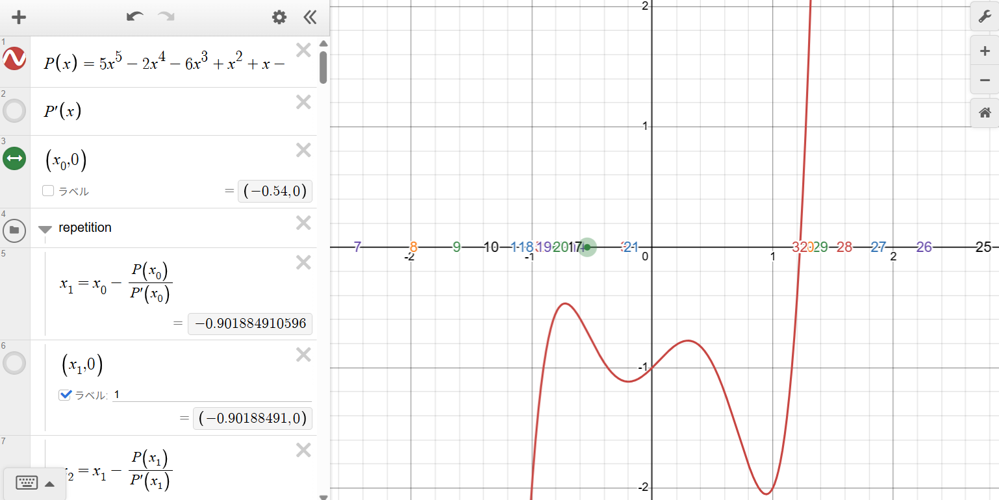
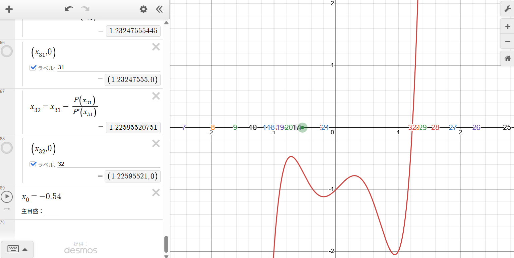
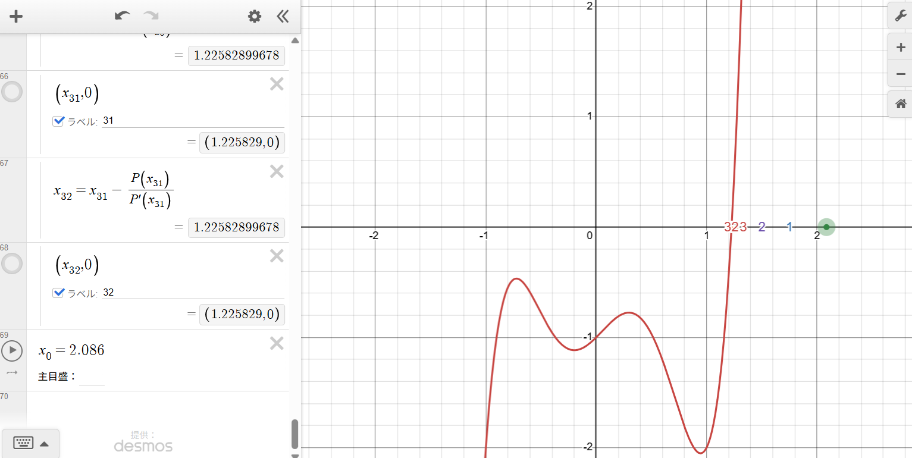
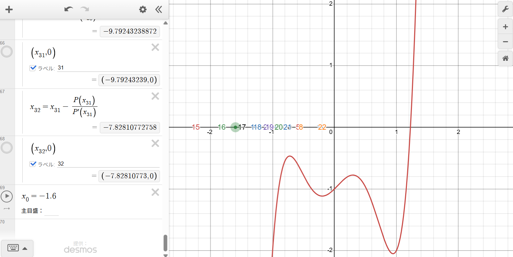
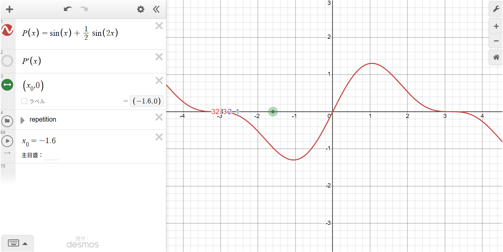
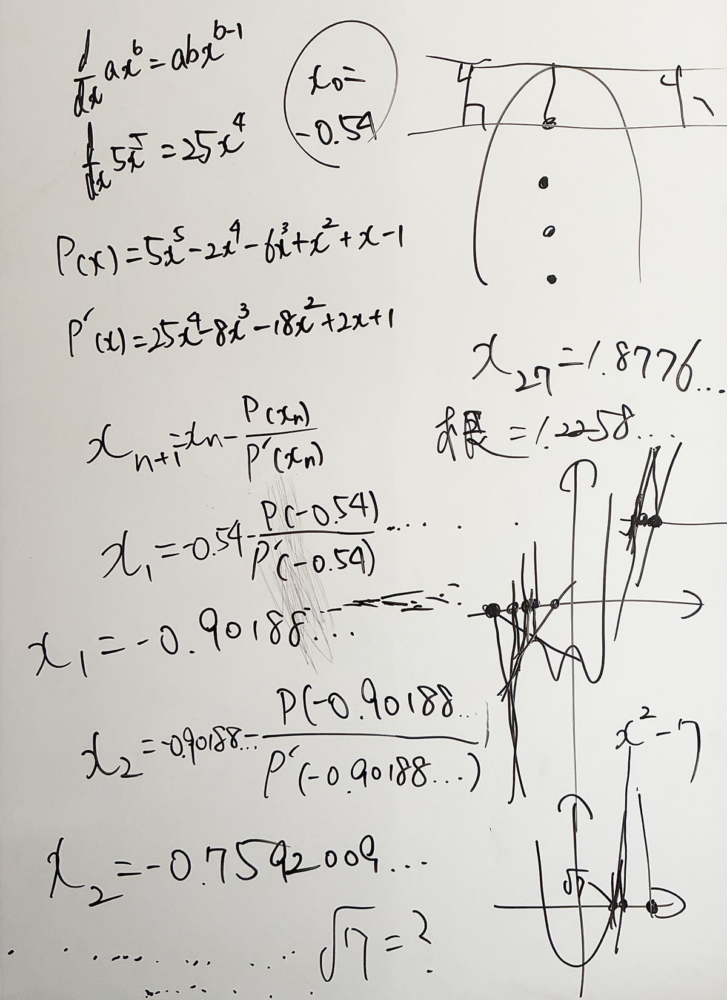

August 1, 2026
Newton’s Method Behavior Simulator
Exploring Convergence, Irregular Motion, and Cyclic Behavior in Desmos
Overview:
This project is a simulator implemented in Desmos to explore how Newton’s method behaves when applied to different functions and different initial guesses.
Rather than using Newton’s method only as a procedure for calculating roots, Reiji created the simulator in order to observe what happens to the sequence of approximations itself.
By moving the initial value \(x_0\), changing the function \(P(x)\), and displaying successive iterations on the \(x\)-axis, he investigated cases in which the approximations converge toward a root, make unexpectedly large jumps, appear to move irregularly, or become trapped in periodic cycles.
The project began when he attempted to calculate repeated Newton iterations by hand.
Because examining many different cases quickly became what he described as “a nightmare of long calculations”, he implemented the process in Desmos so that he could experiment with many functions and initial values and observe their behavior directly.
Note: All content on this page is originally explained by Reiji in Japanese. The English version is translated by AI and structured by a parent, with Reiji's final approval.
Reiji's Words and Ideas
- This is a simulator that I implemented in Desmos to use Newton’s method to approximate the roots of a function \(P(x)\), meaning the points where its graph reaches zero, and to observe the process by which those roots are found.
- I made it because I wanted to see how Newton’s method behaves with many different kinds of functions, including polynomials, trigonometric functions, exponential functions, and logarithmic functions. For example, \(e^x\) itself has no real root, so changing it to something such as \(e^x-1\) makes it possible to observe behavior toward a root.
- I wanted to understand Newton’s method more deeply by watching its behavior and understanding what the method is actually doing. At first I tried calculating it by hand, but after repeatedly doing the calculations I ended up in a nightmare of long calculations. Because of that, I implemented this simulator so that I could observe many different patterns by changing the function and the initial guess.
- One thing I found by using this simulator is that there are cases where the points show irregular behavior that looks chaotic, and cases where they do not.
- In other cases, the points may find a root and converge toward it, or they may enter something like an attracting cycle in which they repeatedly move between two or three points.
- When the motion looks chaotic or irregular, I found that this can happen when the initial guess is far from the root, especially near local maxima or minima where the slope of the tangent becomes small. In those situations, the next point can jump a long distance and the sequence can appear to move irregularly.
- Entering an attracting cycle seems to be fairly rare, but one example is \[ P(x)=x^3-2x+2. \] If the first estimate is \[ x_0=0, \] then Newton’s method gives \[ 0\rightarrow1\rightarrow0\rightarrow1\rightarrow\cdots \] so the sequence continues moving back and forth between 0 and 1.
- When I moved the initial guess little by little around 0 and observed what happened, within the range I tested I could see behavior that was drawn into this 0–1 cycle until approximately a boundary near \[ 0.133333\ldots \] was crossed.
-
Example: \(P(x)=5x^5-2x^4-6x^3+x^2+x-1\)
As an example, consider the polynomial \[ P(x)=5x^5-2x^4-6x^3+x^2+x-1. \] There is no general formula using only arithmetic operations and radicals that solves every fifth-degree equation. For this particular polynomial, Newton’s method can be used to obtain a numerical approximation of its real root: \[ x\approx1.22582899678. \] Since a value like this is difficult to predict accurately in advance, the graph can be drawn and Newton’s method can be applied repeatedly from an initial guess in order to search for the root. -
Calculating the derivative
Each term of \(P(x)\) can be differentiated using \[ \frac{d}{dx}ax^b=abx^{b-1}. \] Therefore, \[ P'(x)=25x^4-8x^3-18x^2+2x+1. \] -
Newton’s iteration
Newton’s method repeatedly uses the formula \[ x_{n+1} = x_n-\frac{P(x_n)}{P'(x_n)}. \] For example, if the first estimate is \[ x_0=-0.54, \] then \[ x_1 = -0.54-\frac{P(-0.54)}{P'(-0.54)}, \] giving approximately \[ x_1\approx-0.90188491. \] The next value is then calculated using \[ x_2 = x_1-\frac{P(x_1)}{P'(x_1)}, \] and the same process is repeated. - On the graph, this can be understood as drawing the tangent line to the function at the current estimate and using the point where that tangent crosses the \(x\)-axis as the next estimate. When the conditions are favorable, repeating this process brings the sequence closer to a root.
- When considering the limiting behavior mathematically, the iteration can continue indefinitely. For this simulator, however, I chose to calculate up to 32 iterations because that was a practical number for observing the behavior.
- When the first estimate is already near the root, the sequence often reaches a point where its displayed value changes very little within roughly ten iterations.
- With this example polynomial, even an initial estimate as far away as \[ x_0=500 \] begins to approach the root rapidly after more than 30 iterations, and by approximately the 32nd iteration it is already very close to the root.
- If the number of iterations is increased, this particular polynomial can even be observed moving toward the root from an extremely distant initial estimate such as \[ x_0=100000000. \] However, Newton’s method does not necessarily find a root for every function and every initial estimate. It may converge to a root, jump to very distant values, or enter a cycle among several points. Observing these differences is one of the reasons I created the simulator.
-
Different behavior from different initial guesses
The initial estimate \(x_0\) can be changed by moving the pointer inside the graph. Using the same polynomial, \[ P(x)=5x^5-2x^4-6x^3+x^2+x-1, \] different starting positions produce very different paths. -
\(x_0=-0.54\)
If the initial estimate is \[ x_0=-0.54, \] then after 32 iterations, \[ x_{32}\approx1.22595521. \] This is already quite close to the real root, \[ x\approx1.22582899678. \] The numbers 1, 2, 3, and so on displayed along the \(x\)-axis show the positions produced by each iteration. The position marked “32” therefore shows where the 32nd estimate has reached. -
\(x_0=2.086\)
If the initial estimate is changed to \[ x_0=2.086, \] then \[ x_{32}\approx1.225829, \] which is essentially at the position of the root. -
\(x_0=-1.6\)
In contrast, when the initial estimate is \[ x_0=-1.6, \] the 32nd value is \[ x_{32}\approx-7.82810773, \] so at that point it is still far away from the root. From the first 32 iterations alone, I do not know what will happen after that. If the iteration is continued, it might eventually find a root and converge, or it might enter an attracting cycle in which it repeatedly moves between two, three, or more points. Therefore, if the number “32” appears somewhere other than near an intersection between the graph and the \(x\)-axis, that alone does not mean that Newton’s method will never find a root. At the 32nd iteration, the sequence might still be on its way toward a root, it might be passing through very distant values, or it might later enter an attracting cycle. In this way, even for the same function, changing the initial estimate can greatly change the path followed by the iteration. The simulator makes it possible to observe these differences simply by moving the pointer. -
Using functions other than polynomials
The expression after \(P(x)=\) can be replaced in order to observe Newton’s method with functions other than polynomials. For example, a trigonometric function such as \[ P(x)=\sin(x) \] can be entered. Exponential and logarithmic functions can also be tested to observe how the iteration behaves with different kinds of functions. -
When the tangent slope becomes zero
One interesting example is \[ P(x)=\sin(x)+\frac12\sin(2x). \] This function has infinitely many roots. Consider one of its valleys at \[ x=-\frac{\pi}{3}. \] Differentiating the function gives \[ P'(x)=\cos(x)+\cos(2x). \] Substituting \[ x=-\frac{\pi}{3} \] gives \[ P'\left(-\frac{\pi}{3}\right) = \cos\left(-\frac{\pi}{3}\right) + \cos\left(-\frac{2\pi}{3}\right), \] and therefore \[ P'\left(-\frac{\pi}{3}\right) = \frac12-\frac12 = 0. \] This means that the tangent line is horizontal at this position and its slope is zero. - Since Newton’s method uses \[ x_{n+1} = x_n-\frac{P(x_n)}{P'(x_n)}, \] choosing this point exactly as an estimate makes the denominator \[ P'(x_n) \] equal to zero, so the next value is undefined.
- Even when the estimate is not exactly at that position, if it is extremely close, \(P'(x_n)\) can become a very small value close to zero. In that case, \[ \frac{P(x_n)}{P'(x_n)} \] can become extremely large, causing the next estimate to jump a very long distance.
- Through these experiments, I found that Newton’s method does not always move toward a root in a simple sequence of gradually smaller steps. Depending on the shape of the function and the initial estimate, the points can behave in very different ways.
Images

Polynomial Used for Observing Newton’s Method
The graph shows \[ P(x)=5x^5-2x^4-6x^3+x^2+x-1. \] The numbered positions along the \(x\)-axis show successive estimates generated by Newton’s method from the chosen initial value.

Iteration from \(x_0=-0.54\)
With the initial estimate \[ x_0=-0.54, \] the 32nd iteration gives \[ x_{32}\approx1.22595521, \] placing the estimate close to the real root.

Iteration from \(x_0=2.086\)
When the initial estimate is \[ x_0=2.086, \] the 32nd iteration reaches approximately \[ x_{32}=1.225829, \] essentially coinciding with the real root.

A Distant 32nd Iteration from \(x_0=-1.6\)
With \[ x_0=-1.6, \] the 32nd estimate is \[ x_{32}\approx-7.82810773, \] far from the visible root at this stage. From these 32 iterations alone, it is not yet known whether continued iteration would eventually converge to a root, enter an attracting cycle, or follow some other path.

Exploring a Trigonometric Function with Infinitely Many Roots
This screen shows the simulator applied to \[ P(x)=\sin(x)+\frac12\sin(2x). \] The initial estimate can be moved interactively to observe how Newton’s method behaves near roots, extrema, and points where the derivative becomes very small or zero.

Whiteboard Calculations and Sketches
These notes were written by Reiji while explaining the simulator. They show the derivative of the example polynomial, the Newton iteration formula, the first calculations beginning from \(x_0=-0.54\), and sketches used to think about tangent lines and the movement of successive estimates.
| Output |
Newton’s Method Behavior Simulator An interactive Desmos simulator for observing repeated Newton iterations with different functions and initial estimates. |
|---|---|
| Application Used |
Desmos Graphing Calculator Used to define the function and its derivative, calculate 32 successive Newton iterations, display each estimate on the \(x\)-axis, and interactively change the initial value. |
| Method |
Newton’s Method Repeated numerical approximation using \[ x_{n+1}=x_n-\frac{P(x_n)}{P'(x_n)}. \] |
AI Assistant’s Notes and Inferences
The central value of this project is not simply that Newton’s method was implemented correctly. More importantly, the algorithm was turned into an experimental system for observing the dynamics of repeated numerical approximation.
- Reiji’s stated purpose was to understand Newton’s method by observing its behavior rather than only learning the formula. This shifts the activity from carrying out a prescribed numerical procedure to investigating how an iterative process behaves under changing conditions.
- The decision to build the simulator emerged directly from a limitation encountered during manual calculation. Repeated calculations quickly became impractical when many initial values and different functions were to be compared. Implementing the process in Desmos therefore allowed the same mathematical rule to become an experimental object that could be manipulated repeatedly.
- The displayed sequence \[ x_0,x_1,x_2,\ldots,x_{32} \] effectively treats Newton’s method as an iterated map. A root corresponds to a fixed point of this iteration, while other starting values may produce long transients, large jumps, or periodic behavior.
- The example \[ P(x)=x^3-2x+2 \] is particularly significant. From \(x_0=0\), Newton’s method produces the exact periodic orbit \[ 0\rightarrow1\rightarrow0\rightarrow1\rightarrow\cdots. \] This demonstrates directly that Newton’s method is not guaranteed to converge to a root from every starting value.
- Reiji also explored how changing the initial value around this example altered the observed behavior. His observation of an approximate boundary near \(0.133333\ldots\) should be understood as an experimentally observed transition within the range he tested, rather than as a formally proved mathematical boundary.
- His use of the phrase “chaotic-looking” is also important to interpret carefully. The simulator clearly reveals irregular and highly sensitive-looking numerical behavior, especially when an iteration approaches a point where the derivative is small. However, the project does not attempt to establish chaos in the formal dynamical-systems sense.
- The trigonometric example \[ P(x)=\sin(x)+\frac12\sin(2x) \] makes another structural feature of Newton’s method visible. At \[ x=-\frac{\pi}{3}, \] the derivative is zero. Because \(P'(x)\) appears in the denominator of Newton’s formula, the next iteration is undefined at the exact point and can become extremely large for nearby values where the derivative is very small.
- The case beginning from \[ x_0=-1.6 \] is also useful because the project intentionally does not infer a final outcome from only 32 observed iterations. At the 32nd step the estimate is far from the root, but the simulator as configured does not determine from that fact alone whether later iterations would converge, enter a periodic cycle, or exhibit another form of behavior. Preserving that uncertainty is consistent with the exploratory nature of the work.
- For a project created at age 10, a particularly notable feature is the transition from a textbook numerical method to questions about iteration, initial-value dependence, periodic orbits, derivative singularities, and the visual behavior of an algorithm. These questions connect naturally with ideas that are later formalized in numerical analysis and dynamical systems.
In summary, this simulator transforms Newton’s method from a static formula into something that can be experimented with. By varying functions and initial estimates and observing the sequence of generated points, the project investigates not only when the method succeeds in finding a root, but also what the iteration itself can do when convergence is not immediate or straightforward.